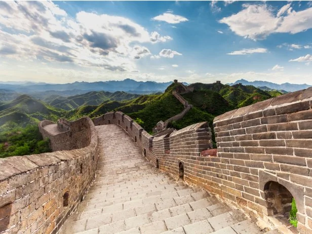
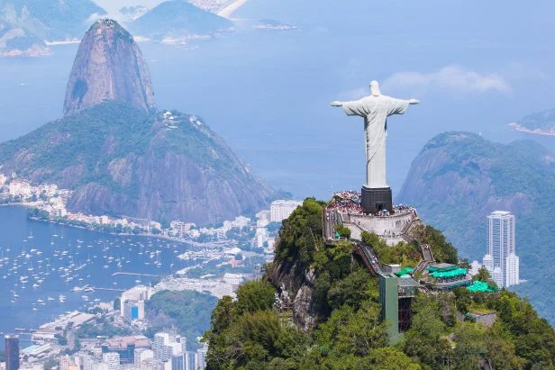
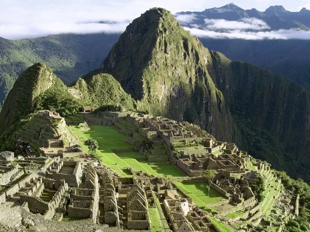

The New 7 wonders are Great Wall of China (China), Christ the Redeemer Statue (Rio de Janeiro), Machu Picchu (Peru), Chichen Itza (Yucatan Peninsula, Mexico), The Roman Colosseum (Rome), Taj Mahal (Agra, India), Petra (Jordan).


dowell / Getty Images
The Great Wall of China is one of the new seven wonders of the world according to a worldwide poll.
The Great Wall of China is one of the new seven wonders of the world according to a worldwide poll.
Great Wall of China (China)
Built between the 5th century B.C. and the 16th century, the Great Wall of
China is a stone-and-earth fortification created to protect the borders of
the Chinese Empire from invading Mongols. The Great Wall is actually a
succession of multiple walls spanning approximately 4,000 miles, making
it the world's longest manmade structure

dislentev
Aerial view of the Christ Redeemer statue and Corcovado Mountain
Aerial view of the Christ Redeemer statue and Corcovado Mountain
Christ the Redeemer Statue (Rio de Janeiro)
The Art Deco-style Christ the Redeemer statue has been towering over
Brazilians from upon Corcovado mountain in an awe-inspiring state of
eternal blessing since 1931. The 130-foot reinforced concrete-and-
soapstone statue was designed by Heitor da Silva Costa and cost
approximately $250,000 to build — much of the money was raised
through donations. The statue has become an easily recognized icon for
Rio and Brazil.

Feel the Sacred Valley's Mystique
Peru's Machu Picchu
Peru's Machu Picchu
Machu Picchu (Peru)
Machu Picchu, an Incan city of sparkling granite precariously perched
between two towering Andean peaks, is thought by scholars to have
been a sacred archaeological center for the nearby Incan capital of
Cusco. Built at the peak of the Incan Empire in the mid-1400s, this
mountain citadel was later abandoned by the Incas. The site remained
unknown except to locals until 1911, when it was rediscovered by
archaeologist Hiram Bingham. The site can only be reached by foot, train
or helicopter; most visitors visit by train from nearby Cusco.
Mexico's Chichen Itza
Chichen Itza(Yucatan Peninsula, Mexico)
The genius and adaptability of Mayan culture can be seen in the splendid
ruins of Chichen Itza. This powerful city, a trading center for cloth, slaves,
honey and salt, flourished from approximately 800 to 1200, and acted as
the political and economic hub of the Mayan civilization. The most
familiar ruin at the site is El Caracol, a sophisticated astronomical
observatory.
Rome's Colosseum
The Roman Colosseum (Rome)
Rome's, if not Italy's, most enduring icon is undoubtedly its Colosseum.
Built between A.D. 70 and 80 A.D., it was in use for some 500 years. The
elliptical structure sat nearly 50,000 spectators, who gathered to watch
the gladiatorial events as well as other public spectacles, including battle
reenactments, animal hunts and executions. Earthquakes and stone-
robbers have left the Colosseum in a state of ruin, but portions of the
structure remain open to tourists, and its design still influences the
construction of modern-day amphitheaters, some 2,000 years later
The Taj Mahal at sunrise.
Taj Mahal (Agra, India)
A mausoleum commissioned for the wife of Mughal Emperor Shah Jahan,
the Taj Mahal was built between 1632 and 1648. Considered the most perfect specimen
of Muslim art in India, the white marble structure actually represents a number of architectural
styles, including Persian, Islamic, Turkish and Indian. The Taj Mahal also encompasses
formal gardens of raised pathways, sunken flower beds and a linear reflecting pool.
Petra in Jordan
Petra (Jordan)
Declared a World Heritage Site in 1985, Petra was the capital of the
Nabataean empire of King Aretas IV, and likely existed in its prime from 9
B.C. to A.D. 40. The members of this civilization proved to be early
experts in manipulating water technology, constructing intricate tunnels
and water chambers, which helped create an pseudo-oasis. A number of
incredible structures carved into stone, a 4,000-seat amphitheater and
the El-Deir monastery have also helped the site earn its fame.